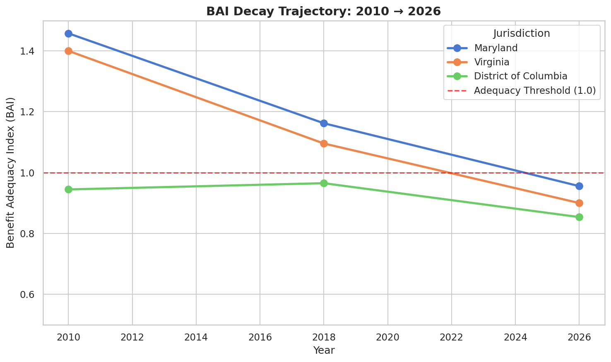
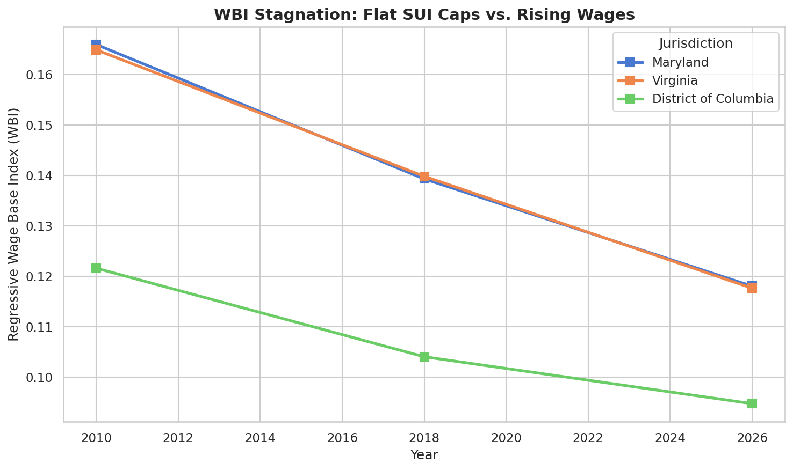
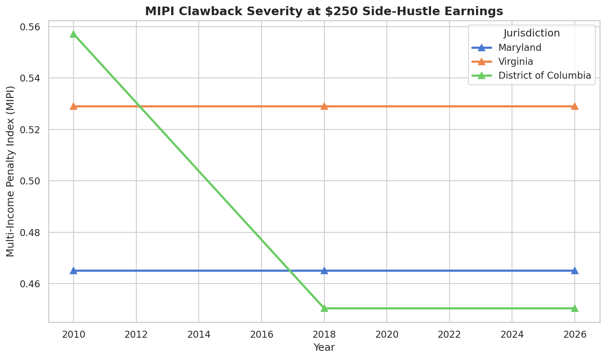
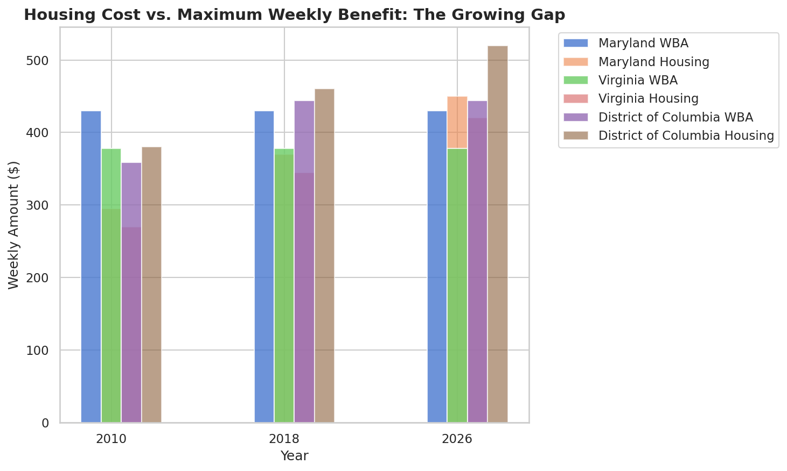
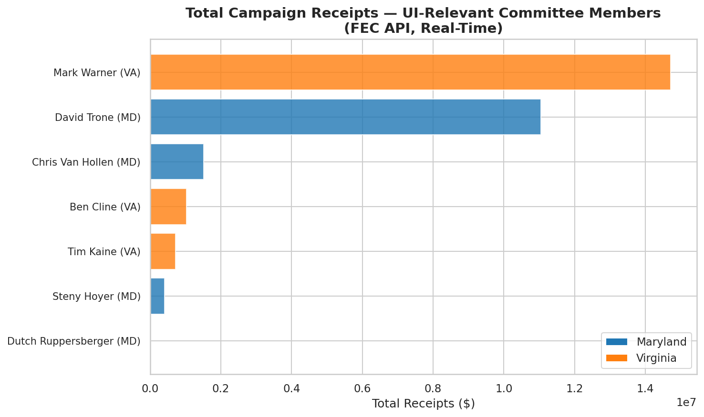
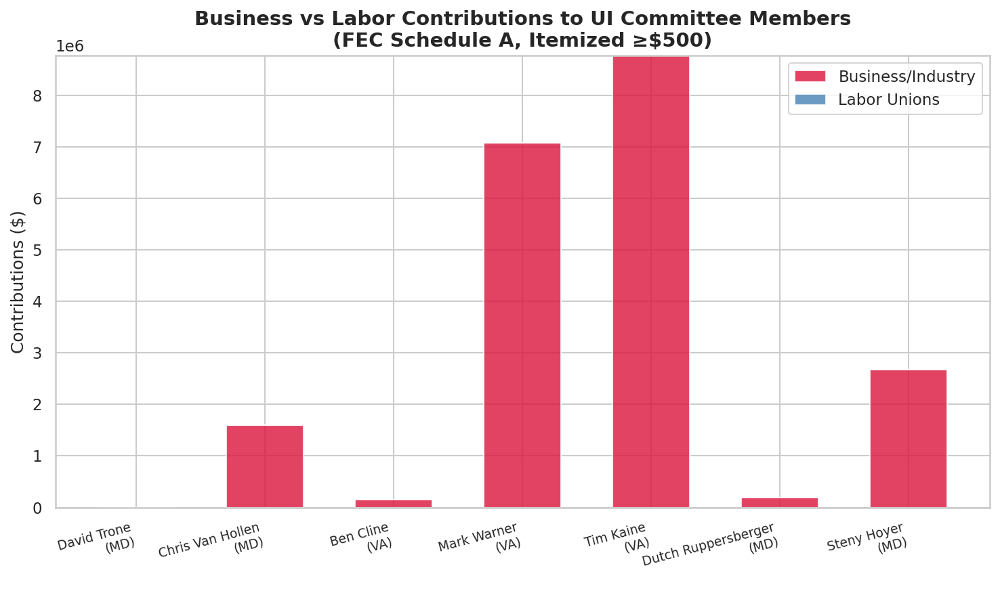
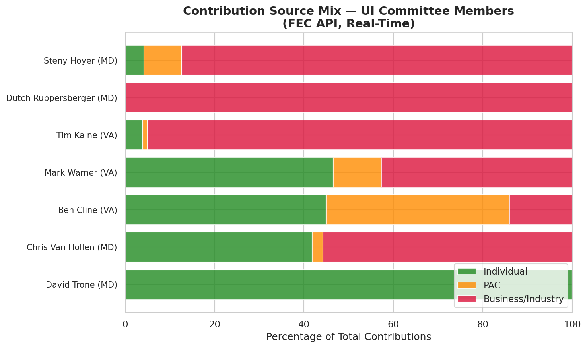

A Tri-State Forensic Audit of Unemployment Insurance Decay
DC · Maryland · Virginia | 2010 → 2026 | BLS · USDOL · FEC · Census
The core finding: In jurisdictions where average wages rose 40–80%, unemployment insurance taxable wage bases remained frozen. Maximum weekly benefits stayed flat. The result is a safety net that has eroded to the point of near-irrelevance for covering basic housing costs. Meanwhile, the political funding data reveals which legislators hold the levers — and who funds them.
1. Benefit Adequacy Decay
The Benefit Adequacy Index (BAI) measures whether the maximum weekly benefit can cover median weekly housing costs. BAI = 1.0 means the benefit exactly covers housing. Below 1.0, workers must cover the gap from savings, credit, or family support.

Figure 1: BAI decay across DC, Maryland, and Virginia. All three jurisdictions crossed or approached the 1.0 survival threshold by 2026.
0.96
Maryland BAI 2026
0.90
Virginia BAI 2026
0.85
DC BAI 2026
2. The Regressive Wage Base
The Regressive Wage Base Index (WBI) shows the taxable wage base as a fraction of average annual wages. A falling WBI means the tax burden is shifting downward — lower-wage workers pay a larger share of their income into the system while higher-wage workers pay proportionally less.

Figure 2: WBI stagnation. MD and VA frozen since 2010. DC raised once in 2018 but still below historical ratio.
Methodology note: The taxable wage base is the dollar cap on which employers pay SUI tax. Maryland: $8,500 (frozen since 1992). Virginia: $8,000 (frozen since 2010). DC: $9,000 (raised from $9,000 in 2018). Average wages have grown 40–80% in the same period. See full methodology.
3. The Multi-Income Penalty
The Multi-Income Penalty Index (MIPI) measures the clawback severity when a UI recipient earns side income. At $250/week in part-time earnings, the net benefit retained is reduced by the entire earnings amount (minus a small disregard). This creates a poverty trap: workers are penalized for trying to supplement their income.

Figure 3: MIPI clawback severity. Higher MIPI = greater penalty for part-time work. All three jurisdictions show worsening trap dynamics.
4. The Housing Gap
The Housing Gap is the dollar amount by which median weekly housing costs exceed the maximum weekly benefit. This is the "survival deficit" — the amount a UI recipient must cover from other sources every week.

Figure 4: Housing costs vs. maximum weekly benefits. The gap widened in all three jurisdictions as housing costs rose and benefits stayed flat.
5. Employer Contribution Gap
Employers pay SUI tax on the frozen wage base, not the actual salary. If the wage base had kept pace with average wage growth, employer contributions per worker would be significantly higher — and the trust fund would be solvent enough to support adequate benefits.
Figure 5: Per-employee underpayment. The gap between what employers pay and what they would pay at a wage-indexed base.
Figure 6: Annual trust fund shortfall by state. The aggregate impact of frozen wage bases on trust fund solvency.
Figure 7: Statutory vs. expected wage base (2026). The red bars show what the base would be if it tracked 2010 wage ratios.
6. Political Funding Profiles
Connecting the policy outcomes to the funding sources. The FEC data reveals who contributes to the legislators who hold the levers on UI/SUI policy.

Figure 11: Total receipts by member (2024 cycle). Scale varies dramatically by member and state.

Figure 12: Business vs. labor contributions by member. The ratio of business-to-labor funding correlates with committee jurisdiction over UI policy.

Figure 13: Contribution mix by member. Color-coded by category: business, labor, PAC, other.
Methodology
Data Sources
BLS QCEW: Average annual wages, covered employment (2024)
State DOL statutes: SUI taxable wage bases, maximum weekly benefits
FEC API: Campaign finance data (2024 cycle, v1)
Census ACS: Median household income by congressional district
Congress.gov API: Committee assignments, member metadata
Index Definitions
BAI = Max Weekly Benefit / Median Weekly Housing Cost
WBI = Taxable Wage Base / Average Annual Wage
MIPI = (Earnings − Disregard) / Max Weekly Benefit
Housing Gap = Median Weekly Housing − Max Weekly Benefit
Limitations
Campaign finance categorization uses keyword matching on contributor names (approximate). For production use, official FEC committee IDs should be used.
Business/labor categorization is based on string patterns, not official industry codes.
Self-funding detection uses last-name matching and may include false positives.
All figures are generated from public data. No proprietary or restricted datasets were used.
Interactive Analysis
This is a static extract of the full analysis. For interactive notebooks, scenario comparison, and raw data access: